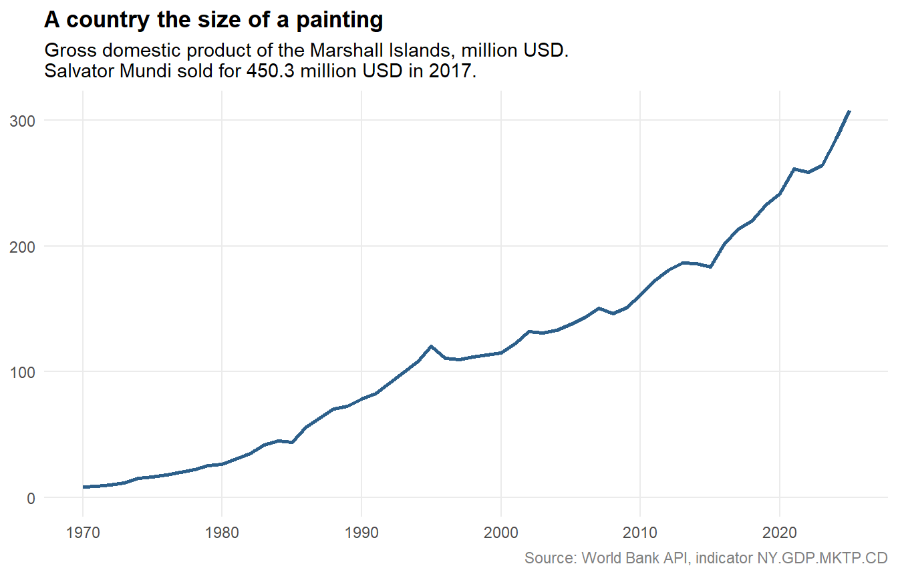

2.4 Remote Data
“The cheapest, fastest, and most reliable components of a computer system are those that aren't there.”
Everything so far assumed that the rectangle is here: a file you read, an object in memory, a tibble you can print. That assumption quietly breaks in most real projects. The table is 40 million rows and will not fit. It is updated hourly by somebody else. Four colleagues need the same numbers and must not each keep their own copy.
The answer in all three cases is the same, and it is a change of habit rather than of tools: stop moving the data, start sending questions. The table stays on a server. You describe the subset you want, the server does the work, and only the answer travels back.
Two technologies do this, and they are far more similar than their reputations suggest. A database answers questions written in SQL. A web API answers questions written as a URL. This section treats them together, because once you have seen the first, the second is a variation.
2.4.1 Databases
A database is software whose only job is to store tables and answer questions about them. The tables look exactly like the rectangles of the previous sections — rows are observations, columns are variables — but they live in a system built for size, for simultaneous users, and for guaranteeing that a row is either written completely or not at all.
Definition
A relational database stores data in tables that are linked by shared key columns. SQL (Structured Query Language, pronounced "sequel" or spelled out) is the language used to ask such a database for data. A query is a single question; the answer is itself a table.
You do not need a server to practise. SQLite is a complete database that lives in a single file — or, as here, purely in memory. It ships with the R package RSQLite, and DBI provides the vocabulary that works the same way for every database engine.
library(tidyverse)
library(DBI)
# ":memory:" creates a temporary database that disappears with the session.
# Replace it with a path like "data/diamonds.sqlite" for a permanent one.
con <- dbConnect(RSQLite::SQLite(), ":memory:")
# Copy two data frames into the database, as two tables.
dbWriteTable(con, "diamonds", ggplot2::diamonds)
clarity_key <- tibble(
clarity = c("I1", "SI2", "SI1", "VS2", "VS1", "VVS2", "VVS1", "IF"),
meaning = c(
"included", "slightly included", "slightly included",
"very slightly included", "very slightly included",
"very very slightly included", "very very slightly included",
"internally flawless"
)
)
dbWriteTable(con, "clarity_key", clarity_key)
dbListTables(con)
#> [1] "clarity_key" "diamonds"The diamonds table has almost 54,000 rows. That is small enough to load, which is exactly why it is a good teaching example: everything below would work identically if it had 54 million.
2.4.1.1 Reading SQL
A query is one sentence with a fixed word order. Five clauses cover most of what analysts write:
| SQL | Meaning | dplyr |
|---|---|---|
SELECT |
which columns | select(), summarise() |
FROM |
which table | the data argument |
WHERE |
which rows, before grouping | filter() |
GROUP BY |
build groups | group_by() |
ORDER BY |
sort the answer | arrange() |
dbGetQuery() sends the sentence and returns the answer as a data frame.
dbGetQuery(con, "
SELECT cut, -- column to group by
COUNT(*) AS n, -- how many rows per group
AVG(price) AS mean_price
FROM diamonds -- the table
WHERE carat > 1 -- rows first, groups afterwards
GROUP BY cut
ORDER BY mean_price DESC
")
#> cut n mean_price
#> 1 Ideal 5662 8674.227
#> 2 Premium 5729 8487.249
#> 3 Very Good 3881 8340.549
#> 4 Good 1579 7753.601
#> 5 Fair 651 7177.856Two details are worth keeping. SQL is read in a different order than it is written — FROM first, then WHERE, then GROUP BY, and only at the end SELECT. And the answer arrived as a small summary table: the 54,000 rows never left the database.
2.4.1.2 The same thing in dplyr
Here is the part that surprises most R users. You already write SQL — you just spell it differently. The package dbplyr translates dplyr verbs into SQL, so a database table can be piped like any other data frame.
tbl() does not import anything. It creates a lazy reference: a promise of a table.
library(dbplyr)
diamonds_db <- tbl(con, "diamonds")
big_stones <- diamonds_db %>%
filter(carat > 1) %>%
group_by(cut) %>%
summarise(n = n(), mean_price = mean(price, na.rm = TRUE)) %>%
arrange(desc(mean_price))
# Nothing has been computed yet. This is the SQL that would be sent:
big_stones %>% show_query()
#> <SQL>
#> SELECT `cut`, COUNT(*) AS `n`, AVG(`price`) AS `mean_price`
#> FROM `diamonds`
#> WHERE (`carat` > 1.0)
#> GROUP BY `cut`
#> ORDER BY `mean_price` DESCThat is the query from the previous chunk, written by a machine — a little more verbose, with the WHERE step wrapped in a subquery, but identical in effect. The pipeline is still only a plan; the database has not been touched. collect() is the command that finally runs it and pulls the result into R.
big_stones %>% collect()
#> # A tibble: 5 × 3
#> cut n mean_price
#> <chr> <int> <dbl>
#> 1 Ideal 5662 8674.
#> 2 Premium 5729 8487.
#> 3 Very Good 3881 8341.
#> 4 Good 1579 7754.
#> 5 Fair 651 7178.Watch out
collect() is the moment where the data actually moves. Put it at the end of a pipeline, after filtering and summarising — never at the beginning. tbl(con, "sales") %>% collect() %>% filter(...) asks the database for all forty million rows and then throws most of them away, which is the single most common mistake with dbplyr.
2.4.1.3 Joining across tables
Databases are called relational because tables refer to each other through shared keys. Joins happen inside the database and translate exactly as you would expect.
tbl(con, "diamonds") %>%
left_join(tbl(con, "clarity_key"), by = "clarity") %>%
count(meaning, sort = TRUE) %>%
collect()
#> # A tibble: 5 × 2
#> meaning n
#> <chr> <int>
#> 1 slightly included 22259
#> 2 very slightly included 20429
#> 3 very very slightly included 8721
#> 4 internally flawless 1790
#> 5 included 741When the work is done, close the connection. With an in-memory database this also deletes it.
For a real project, only the first line changes: RPostgres::Postgres(), RMariaDB::MariaDB() or duckdb::duckdb() instead of RSQLite::SQLite(), plus host, user and password. Everything after dbConnect() stays the same. DuckDB deserves a special mention — it needs no server like SQLite, but is built for analysis and can query CSV or Parquet files directly, without importing them first.
2.4.2 Web APIs
Now change one thing. The table is still somewhere else, you still send a question and receive a subset — but you have no account on that machine, and the owner would never let a stranger run SQL on it. So they put a counter in front: a fixed set of questions you are allowed to ask, phrased as a URL.
Definition
An application programming interface (API) is a way for two or more computer programs to communicate with each other. A web API is one you reach with a URL: parameters in the link are the question, and the answer usually comes back as JSON, a nested text format that R reads into lists and data frames.
The World Bank publishes the development indicators of every country this way — free, no registration, no key. The URL below reads: give me indicator NY.GDP.MKTP.CD (gross domestic product in current US dollars) for country MHL (the Marshall Islands), as JSON, up to 100 observations.
Open it in a browser. No design, no menu, no cookie banner — just data. And note which parts are variable: swap MHL for DEU and you get Germany; swap the indicator code and you get population, life expectancy or CO₂ emissions. country, indicator, format and per_page are this API's version of FROM, SELECT and LIMIT.
jsonlite::fromJSON() fetches the URL and translates JSON into R objects in one step. The World Bank wraps its answer in a list of two: metadata first, observations second.
library(jsonlite)
gdp_url <- paste0(
"https://api.worldbank.org/v2/country/MHL/",
"indicator/NY.GDP.MKTP.CD?format=json&per_page=100"
)
gdp_file <- file.path("data", "worldbank-marshall-islands-gdp.csv")
# Ask the server once, then work from the local copy. A book should still
# build when a service is down, and nobody should hammer a free API.
if (!file.exists(gdp_file)) {
response <- fromJSON(gdp_url)
# response[[1]] is the metadata, response[[2]] the actual observations.
response[[2]] %>%
transmute(
year = as.integer(date),
gdp_usd = value
) %>%
filter(!is.na(gdp_usd)) %>%
arrange(year) %>%
write_csv(gdp_file)
}
gdp <- read_csv(
gdp_file,
col_types = cols(year = col_integer(), gdp_usd = col_double())
)
glimpse(gdp)
#> Rows: 56
#> Columns: 2
#> $ year <int> 1970, 1971, 1972, 1973, 1974, 1975, 1976, 1977, 1978, 1979, 19…
#> $ gdp_usd <dbl> 8408486, 9116810, 9973652, 11607366, 15217532, 16691301, 18153…Notice what did not happen. No footnote markers to strip, no thousands separators, no two spellings of the same label, no guessing which column is which. The provider promised a shape and delivered it. The only cosmetic step is the unit: dollars are hard to read at nine digits.
gdp %>%
mutate(gdp_musd = gdp_usd / 1e6) %>%
ggplot(aes(x = year, y = gdp_musd)) +
geom_line(colour = "#2C5F8A", linewidth = 1) +
scale_y_continuous(labels = scales::comma, limits = c(0, NA)) +
labs(
title = "A country the size of a painting",
subtitle = paste(
"Gross domestic product of the Marshall Islands, million USD.",
"\nSalvator Mundi sold for 450.3 million USD in 2017."
),
x = NULL, y = NULL,
caption = "Source: World Bank API, indicator NY.GDP.MKTP.CD"
) +
theme_minimal(base_size = 11) +
theme(
panel.grid.minor = element_blank(),
plot.title = element_text(face = "bold"),
plot.caption = element_text(colour = "grey50")
)
About 60,000 people live on the Marshall Islands, and in no year on record did the country produce as much value as a single painting fetched at a New York auction in 2017. We will meet that painting again in Web Data, where a very different technique is needed to get at its price.
2.4.2.1 Finding and using an API
Three habits cover most projects.
- Look for the word. On the site of a statistical office, a ministry, a museum or a transport company, search for API, developer, web service, open data or Schnittstelle. Serious providers put it in the footer.
- Read two things in the documentation. First the endpoint: the base URL and which parameters it accepts. Second the terms: is a key required, how many requests per minute are allowed, how may the data be used? Free and keyless, like the World Bank, is the exception rather than the rule.
- Check whether R already wraps it. For many large providers somebody has written a package, so you never build a URL by hand:
WDIfor the World Bank,eurostatfor Eurostat,restatisfor Destatis,osmdatafor OpenStreetMap. Search CRAN for the provider's name before writing your own request.
An API key is a password. Never write it into a script and never commit it to Git — put it in your .Renviron file, which usethis::edit_r_environ(scope = "project") opens for you, and read it with Sys.getenv("MY_API_KEY"). Services such as GitGuardian exist because this rule is broken constantly.
2.4.3 The same idea twice
The two halves of this section were the same manoeuvre.
| Database | Web API | |
|---|---|---|
| Where the data is | a server you have an account on | a server you do not |
| The question | SQL | parameters in a URL |
| The answer | a table | JSON, XML or CSV |
| What travels | the subset | the subset |
| Who defines what is possible | you, within the schema | the provider |
The last row is the real difference. In a database you may ask anything the schema allows; through an API you may ask only what the owner anticipated. That is why an API is easier and more limited at the same time.
The two even meet. Some open-data platforms accept SQL through the URL: the Socrata portals used by many public administrations take a $query=SELECT ... WHERE ... GROUP BY ... parameter, and PostgREST turns an entire PostgreSQL database into a web API without writing a line of server code. Once you see that, the distinction becomes a matter of packaging rather than of principle.
And both share a discipline worth carrying into the next chapters: ask for little, ask rarely, keep a copy of the answer. Filter before you collect(). Save the result of an API call instead of repeating it at every render. Your future self, the server owner, and anyone rebuilding your analysis in three years will all be better off.